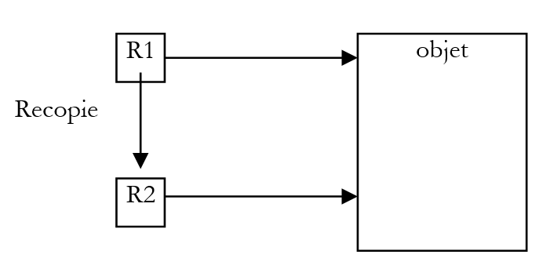

3. Classes and interfaces
3.1. Objects by example
3.1.1. Overview
We will now explore object-oriented programming through examples. An object is an entity that contains data defining its state (called attributes or properties) and functions (called methods). An object is created based on a template called a class:
public class C1{
type1 p1; // property p1
type2 p2; // property p2
…
type3 m3(…){ // m3 method
…
}
type4 m4(…){ // m4 method
…
}
…
}
From the previous class C1, we can create many objects O1, O2,… All will have the properties p1, p2,… and the methods m3, m4, … They will have different values for their properties pi, thus each having its own state.
If O1 is an object of type C1, O1.p1 denotes the property p1 of O1 and O1.m1 denotes the method m1 of O1.
Let’s consider a first object model: the Person class.
3.1.2. Definition of the Person class
The definition of the Person class will be as follows:
import java.io.*;
public class personne{
// attributes
private String prenom;
private String nom;
private int age;
// method
public void initialise(String P, String N, int age){
this.prenom=P;
this.nom=N;
this.age=age;
}
// method
public void identifie(){
System.out.println(prenom+","+nom+","+age);
}
}
Here we have the definition of a class, which is a data type. When we create variables of this type, we call them objects. A class is therefore a template from which objects are created.
The members or fields of a class can be data or methods (functions). These fields can have one of the following three attributes:
private: A private field is accessible only by the class's internal methods
public: A public field is accessible by any function, whether or not it is defined within the class
protected: A protected field (protected) is accessible only by the internal methods of the class or a derived object (see the concept of inheritance later).
In general, a class’s data is declared private, while its methods are declared public. This means that the user of an object (the programmer)
a: will not have direct access to the object’s private data
b: will be able to call the object’s public methods, particularly those that provide access to its private data.
The syntax for declaring an object is as follows:
public class nomClasse{
private donnée ou méthode privée
public donnée ou méthode publique
protected donnée ou méthode protégée
}
Notes
- The order in which private, protected, and public attributes are declared is arbitrary.
3.1.3. The initialize method
Let’s return to our Person class declared as:
import java.io.*;
public class personne{
// attributes
private String prenom;
private String nom;
private int age;
// method
public void initialise(String P, String N, int age){
this.prenom=P;
this.nom=N;
this.age=age;
}
// method
public void identifie(){
System.out.println(prenom+","+nom+","+age);
}
}
What is the purpose of the initialize method? Since lastName, firstName, and age are private members of the Person class, the statements
are invalid. We must initialize an object of type Person using a public method. This is the role of the initialize method. We write:
The syntax p1.initialise is valid because initialize is public.
3.1.4. The new operator
The sequence of statements
is incorrect. The statement
declares p1 as a reference to an object of type person. This object does not yet exist, so p1 is not initialized. It is as if we had written:
where we explicitly indicate with the keyword null that the variable p1 does not yet reference any object.
When we then write
we are calling the initialize method of the object referenced by p1. However, this object does not yet exist, and the compiler will report an error. For p1 to reference an object, you must write:
This creates an uninitialized Person object: the attributes name and first_name, which are references to objects of type String, will have the value null, and age will have the value 0. There is therefore a default initialization. Now that p1 references an object, the initialization statement for this object
is valid.
3.1.5. The keyword this
Let’s look at the code for the initialize method:
public void initialise(String P, String N, int age){
this.prenom=P;
this.nom=N;
this.age=age;
}
The statement this.prenom=P means that the first_name attribute of the current object (this) is assigned the value P. The keyword this refers to the current object: the one in which the method being executed resides. How do we know this? Let’s look at how the object referenced by p1 is initialized in the calling program:
It is the initialize method of the p1 object that is called. When we reference the this object within this method, we are actually referencing the p1 object. The initialize method could also have been written as follows:
public void initialise(String P, String N, int age){
prenom=P;
nom=N;
this.age=age;
}
When a method of an object references an attribute A of that object, the notation this.A is implied. It must be used explicitly when there is a conflict of identifiers. This is the case with the statement:
this.age=age;
where age refers to both an attribute of the current object and the age parameter received by the method. The ambiguity must then be resolved by referring to the age attribute as this.age.
3.1.6. A test program
Here is a test program:
public class test1{
public static void main(String arg[]){
personne p1=new personne();
p1.initialise("Jean","Dupont",30);
p1.identifie();
}
}
The Person class is defined in the source file personne.java and is compiled:
E:\data\serge\JAVA\BASES\OBJETS\2>javac personne.java
E:\data\serge\JAVA\BASES\OBJETS\2>dir
10/06/2002 09:21 473 personne.java
10/06/2002 09:22 835 personne.class
10/06/2002 09:23 165 test1.java
We do the same for the test program:
E:\data\serge\JAVA\BASES\OBJETS\2>javac test1.java
E:\data\serge\JAVA\BASES\OBJETS\2>dir
10/06/2002 09:21 473 personne.java
10/06/2002 09:22 835 personne.class
10/06/2002 09:23 165 test1.java
10/06/2002 09:25 418 test1.class
It may seem surprising that the program test1.java does not import the person class with a statement:
When the compiler encounters a class reference in the source code that is not defined in that same source file, it searches for the class in various locations:
- in the packages imported by the import statements
- in the directory from which the compiler was launched
In our example, the compiler was launched from the directory containing the file personne.class, which explains why it found the definition of the Person class. In this scenario, adding an import statement causes a compilation error:
E:\data\serge\JAVA\BASES\OBJETS\2>javac test1.java
test1.java:1: '.' expected
import personne;
^
1 error
To avoid this error but to ensure that the personne class is imported, we will write the following at the beginning of the program in the future:
We can now run the test1.class file:
It is possible to combine multiple classes into a single source file. Let’s combine the Person and test1 classes into the source file test2.java. The test1 class is renamed test2 to reflect the change in the source file name:
// imported packages
import java.io.*;
class personne{
// attributes
private String prenom; // first name
private String nom; // its name
private int age; // his age
// method
public void initialise(String P, String N, int age){
this.prenom=P;
this.nom=N;
this.age=age;
}//initialise
// method
public void identifie(){
System.out.println(prenom+","+nom+","+age);
}//identifies
}//class
public class test2{
public static void main(String arg[]){
personne p1=new personne();
p1.initialise("Jean","Dupont",30);
p1.identifie();
}
}
Note that the Person class no longer has the public attribute. In fact, in a Java source file, only one class can have the public attribute. This is the class that contains the main method. Furthermore, the source file must be named after this class. Let’s compile the file test2.java:
E:\data\serge\JAVA\BASES\OBJETS\3>dir
10/06/2002 09:36 633 test2.java
E:\data\serge\JAVA\BASES\OBJETS\3>javac test2.java
E:\data\serge\JAVA\BASES\OBJETS\3>dir
10/06/2002 09:36 633 test2.java
10/06/2002 09:41 832 personne.class
10/06/2002 09:41 418 test2.class
Note that a .class file has been generated for each of the classes present in the source file. Now let’s run the test2.class file:
From now on, we will use both methods interchangeably:
- classes grouped into a single source file
- one class per source file
3.1.7. Another method initializes
Let’s continue with the Person class and add the following method to it:
public void initialise(personne P){
prenom=P.prenom;
nom=P.nom;
this.age=P.age;
}
We now have two methods named initialize: this is valid as long as they accept different parameters. That is the case here. The parameter is now a reference P to a person. The attributes of person P are then assigned to the current object (this). Note that the initialize method has direct access to the attributes of object P even though they are of type private. This is always true: methods of an object O1 of a class C always have access to the private attributes of other objects of the same class C.
Here is a test of the new Person class:
// import nobody;
import java.io.*;
public class test1{
public static void main(String arg[]){
personne p1=new personne();
p1.initialise("Jean","Dupont",30);
System.out.print("p1=");
p1.identifie();
personne p2=new personne();
p2.initialise(p1);
System.out.print("p2=");
p2.identifie();
}
}
and its results:
3.1.8. Constructors of the Person class
A constructor is a method that bears the name of the class and is called when the object is created. It is generally used to initialize the object. It is a method that can accept arguments but returns no result. Its prototype or definition is not preceded by any type (not even void).
If a class has a constructor that accepts n arguments args, the declaration and initialization of an object of that class can be done as follows:
classe objet =new classe(arg1,arg2, ... argn);
or
classe objet;
…
objet=new classe(arg1,arg2, ... argn);
When a class has one or more constructors, one of these constructors must be used to create an object of that class. If a class C has no constructors, it has a default constructor, which is the constructor without parameters: public C(). The object’s attributes are then initialized with default values. This is what happened when, in the previous programs, we wrote:
Let’s create two constructors for our Person class:
public class personne{
// attributes
private String prenom;
private String nom;
private int age;
// manufacturers
public personne(String P, String N, int age){
initialise(P,N,age);
}
public personne(personne P){
initialise(P);
}
// method
public void initialise(String P, String N, int age){
this.prenom=P;
this.nom=N;
this.age=age;
}
public void initialise(personne P){
this.prenom=P.prenom;
this.nom=P.nom;
this.age=P.age;
}
// method
public void identifie(){
System.out.println(prenom+","+nom+","+age);
}
}
Our two constructors simply call the corresponding initialize methods. Recall that when, in a constructor, we find the notation initialize(P), for example, the compiler translates it to this.initialise(P). In the constructor, the initialize method is therefore called to operate on the object referenced by this, that is, the current object, the one being constructed.
Here is a test program:
// import nobody;
import java.io.*;
public class test1{
public static void main(String arg[]){
personne p1=new personne("Jean","Dupont",30);
System.out.print("p1=");
p1.identifie();
personne p2=new personne(p1);
System.out.print("p2=");
p2.identifie();
}
}
and the results obtained:
3.1.9. Object references
We are still using the same Person class. The test program becomes the following:
// import nobody;
import java.io.*;
public class test1{
public static void main(String arg[]){
// p1
personne p1=new personne("Jean","Dupont",30);
System.out.print("p1="); p1.identifie();
// p2 references the same object as p1
personne p2=p1;
System.out.print("p2="); p2.identifie();
// p3 references an object that will be a copy of the object referenced by p1
personne p3=new personne(p1);
System.out.print("p3="); p3.identifie();
// change the state of the object referenced by p1
p1.initialise("Micheline","Benoît",67);
System.out.print("p1="); p1.identifie();
// as p2=p1, the object referenced by p2 must have changed state
System.out.print("p2="); p2.identifie();
// as p3 does not reference the same object as p1, the object referenced by p3 must not have changed
System.out.print("p3="); p3.identifie();
}
}
The results are as follows:
p1=Jean,Dupont,30
p2=Jean,Dupont,30
p3=Jean,Dupont,30
p1=Micheline,Benoît,67
p2=Micheline,Benoît,67
p3=Jean,Dupont,30
When declaring the variable p1 using
p1 references the object person("Jean","Dupont",30) but is not the object itself. In C, we would say that it is a pointer, c.a.d, to the address of the created object. If we then write:
It is not the person("Jean","Dupont",30) object that is modified; it is the p1 reference that changes value. The person("Jean","Dupont",30) object will be "lost" if it is not referenced by any other variable.
When we write:
we initialize the pointer p2: it "points" to the same object (it refers to the same object) as the pointer p1. Thus, if we modify the object "pointed to" (or referenced) by p1, we modify the one referenced by p2.
When we write:
A new object is created, which is a copy of the object referenced by p1. This new object will be referenced by p3. If we modify the object "pointed to" (or referenced) by p1, we do not modify the object referenced by p3 in any way. This is what the results show.
3.1.10. Temporary objects
In an expression, you can explicitly call an object’s constructor: the object is created, but you cannot access it (to modify it, for example). This temporary object is created for the purpose of evaluating the expression and then discarded. The memory space it occupied will be automatically reclaimed later by a program called a "garbage collector," whose role is to reclaim memory space occupied by objects that are no longer referenced by program data.
Consider the following example:
// import nobody;
public class test1{
public static void main(String arg[]){
new personne(new personne("Jean","Dupont",30)).identifie();
}
}
and let's modify the constructors of the Person class so that they display a message:
// manufacturers
public personne(String P, String N, int age){
System.out.println("Constructeur personne(String, String, int)");
initialise(P,N,age);
}
public personne(personne P){
System.out.println("Constructeur personne(personne)");
initialise(P);
}
We get the following results:
showing the successive construction of the two temporary objects.
3.1.11. Methods for reading and writing private attributes
We add the necessary methods to the Person class to read or modify the state of the objects' attributes:
public class personne{
private String prenom;
private String nom;
private int age;
public personne(String P, String N, int age){
this.prenom=P;
this.nom=N;
this.age=age;
}
public personne(personne P){
this.prenom=P.prenom;
this.nom=P.nom;
this.age=P.age;
}
public void identifie(){
System.out.println(prenom+","+nom+","+age);
}
// accessors
public String getPrenom(){
return prenom;
}
public String getNom(){
return nom;
}
public int getAge(){
return age;
}
//modifiers
public void setPrenom(String P){
this.prenom=P;
}
public void setNom(String N){
this.nom=N;
}
public void setAge(int age){
this.age=age;
}
}
We test the new class with the following program:
// import nobody;
public class test1{
public static void main(String[] arg){
personne P=new personne("Jean","Michelin",34);
System.out.println("P=("+P.getPrenom()+","+P.getNom()+","+P.getAge()+")");
P.setAge(56);
System.out.println("P=("+P.getPrenom()+","+P.getNom()+","+P.getAge()+")");
}
}
and we get the following results:
3.1.12. Class methods and attributes
Suppose we want to count the number of Person objects created in an application. We could manage a counter ourselves, but we risk forgetting temporary objects that are created here and there. It would seem safer to include an instruction in the Person class constructors that increments a counter. The problem is passing a reference to this counter so that the constructor can increment it: we need to pass a new parameter to them. We can also include the counter in the class definition. Since it is an attribute of the class itself and not of a particular object of that class, we declare it differently using the static keyword:
To reference it, we write personne.nbPersonnes to show that it is an attribute of the Person class itself. Here, we have created a private attribute that cannot be accessed directly from outside the class. We therefore create a public method to provide access to the class attribute nbPersonnes. To return the value of nbPersonnes, the method does not need a specific object: in fact, nbPersonnes is not the attribute of a specific object; it is the attribute of an entire class. Therefore, we need a class method that is also declared static:
which will be called from outside using the syntax personne.getNbPersonnes(). Here is an example.
The Person class becomes the following:
public class personne{
// class attribute
private static long nbPersonnes=0;
// object attributes
…
// manufacturers
public personne(String P, String N, int age){
initialise(P,N,age);
nbPersonnes++;
}
public personne(personne P){
initialise(P);
nbPersonnes++;
}
// method
…
// class method
public static long getNbPersonnes(){
return nbPersonnes;
}
}// class
With the following program:
// import nobody;
public class test1{
public static void main(String arg[]){
personne p1=new personne("Jean","Dupont",30);
personne p2=new personne(p1);
new personne(p1);
System.out.println("Nombre de personnes créées : "+personne.getNbPersonnes());
}// hand
}//test1
We get the following results:
3.1.13. Passing an object to a function
We have already mentioned that Java passes actual function parameters by value: the values of the actual parameters are copied into the formal parameters. A function cannot therefore modify the actual parameters.
In the case of an object, one must not be misled by the common misuse of terminology, where people systematically refer to an "object" instead of an "object reference." An object is manipulated only via a reference (a pointer) to it. What is therefore passed to a function is not the object itself but a reference to that object. It is therefore the value of the reference—and not the value of the object itself—that is copied into the formal parameter: no new object is created.
If an object reference R1 is passed to a function, it will be copied into the corresponding formal parameter R2. Thus, references R2 and R1 point to the same object. If the function modifies the object pointed to by R2, it obviously modifies the one referenced by R1 since they are the same.

This is illustrated by the following example:
// import nobody;
public class test1{
public static void main(String arg[]){
personne p1=new personne("Jean","Dupont",30);
System.out.print("Paramètre effectif avant modification : ");
p1.identifie();
modifie(p1);
System.out.print("Paramètre effectif après modification : ");
p1.identifie();
}// hand
private static void modifie(personne P){
System.out.print("Paramètre formel avant modification : ");
P.identifie();
P.initialise("Sylvie","Vartan",52);
System.out.print("Paramètre formel après modification : ");
P.identifie();
}// modify
}// class
The modify method is declared static because it is a class method: you do not need to prefix it with an object to call it. The results obtained are as follows:
Constructeur personne(String, String, int)
Paramètre effectif avant modification : Jean,Dupont,30
Paramètre formel avant modification : Jean,Dupont,30
Paramètre formel après modification : Sylvie,Vartan,52
Paramètre effectif après modification : Sylvie,Vartan,52
We can see that only one object is constructed: that of the person p1 in the main function, and that the object was indeed modified by the modify function.
3.1.14. Encapsulating a function’s output parameters in an object
Because parameters are passed by value, it is not possible to write a Java function with output parameters of type int, for example, since we cannot pass a reference to a type int that is not an object. We can therefore create a class that encapsulates the int type:
public class entieres{
private int valeur;
public entieres(int valeur){
this.valeur=valeur;
}
public void setValue(int valeur){
this.valeur=valeur;
}
public int getValue(){
return valeur;
}
}
The previous class has a constructor for initializing an integer and two methods for reading and modifying the value of that integer. We test this class with the following program:
// import integer;
public class test2{
public static void main(String[] arg){
entieres I=new entieres(12);
System.out.println("I="+I.getValue());
change(I);
System.out.println("I="+I.getValue());
}
private static void change(entieres entier){
entier.setValue(15);
}
}
and we get the following results:
3.1.15. An array of people
An object is a piece of data like any other, and as such, multiple objects can be grouped into an array:
// import nobody;
public class test1{
public static void main(String arg[]){
personne[] amis=new personne[3];
System.out.println("----------------");
amis[0]=new personne("Jean","Dupont",30);
amis[1]=new personne("Sylvie","Vartan",52);
amis[2]=new personne("Neil","Armstrong",66);
int i;
for(i=0;i<amis.length;i++)
amis[i].identifie();
}
}
The statement person[] friends = new person[3]; creates an array of 3 elements of type *person. These 3 elements are initialized here with the value null*, c.a.d, meaning they do not reference any objects. Again, in a technical sense, we refer to an "array of objects" when it is actually just an array of object references. The creation of the object array—which is itself an object (due to the presence of new)—does not, in and of itself, create any objects of the type of its elements: this must be done subsequently.
The following results are obtained:
----------------
Constructeur personne(String, String, int)
Constructeur personne(String, String, int)
Constructeur personne(String, String, int)
Jean,Dupont,30
Sylvie,Vartan,52
Neil,Armstrong,66
3.2. Inheritance by Example
3.2.1. Overview
Here we discuss the concept of inheritance. The purpose of inheritance is to "customize" an existing class so that it meets our needs. Suppose we want to create a Teacher class: a teacher is a specific person. They have attributes that other people do not have: the subject they teach, for example. But they also have the attributes of any person: first name, last name, and age. A teacher is therefore a full member of the Person class but has additional attributes. Rather than writing a Teacher class from scratch, we would prefer to build upon the existing Person class and adapt it to the specific characteristics of teachers. It is the concept of inheritance that allows us to do this.
To express that the Teacher class inherits the properties of the Person class, we would write:
public class enseignant extends personne
person is called the parent (or base) class, and Teacher the derived (or child) class. A Teacher object has all the qualities of a person object: it has the same attributes and methods. These attributes and methods of the parent class are not repeated in the definition of the child class; we simply list the attributes and methods added by the child class:
class enseignant extends personne{
// attributes
private int section;
// manufacturer
public enseignant(String P, String N, int age,int section){
super(P,N,age);
this.section=section;
}
}
We assume that the Person class is defined as follows:
public class personne{
private String prenom;
private String nom;
private int age;
public personne(String P, String N, int age){
this.prenom=P;
this.nom=N;
this.age=age;
}
public personne(personne P){
this.prenom=P.prenom;
this.nom=P.nom;
this.age=P.age;
}
public String identite(){
return "personne("+prenom+","+nom+","+age+")";
}
// accessors
public String getPrenom(){
return prenom;
}
public String getNom(){
return nom;
}
public int getAge(){
return age;
}
//modifiers
public void setPrenom(String P){
this.prenom=P;
}
public void setNom(String N){
this.nom=N;
}
public void setAge(int age){
this.age=age;
}
}
The identifie method has been slightly modified to return a string identifying the person and is now named identite. Here, the Teacher class adds to the methods and attributes of the Person class:
- a `section` attribute, which is the section number to which the teacher belongs within the teaching staff (basically one section per subject)
- a new constructor that allows all of a teacher’s attributes to be initialized
3.2.2. Creating a Teaching Object
The constructor for the Teacher class is as follows:
// manufacturer
public enseignant(String P, String N, int age,int section){
super(P,N,age);
this.section=section;
}
The statement super(P, N, age) is a call to the parent class’s constructor, in this case the Person class. We know that this constructor initializes the firstName, lastName, and age fields of the Person object contained within the Student object. This seems quite complicated, and we might prefer to write:
// manufacturer
public enseignant(String P, String N, int age,int section){
this.prenom=P;
this.nom=N
this.age=age
this.section=section;
}
That's impossible. The Person class has declared its three fields—first_name, last_name, and age—as private. Only objects of the same class have direct access to these fields. All other objects, including child objects as in this case, must use public methods to access them. This would have been different if the Person class had declared the three fields as protected: it would then have allowed derived classes to have direct access to the three fields. In our example, using the parent class’s constructor was therefore the correct solution, and this is the standard approach: when constructing a child object, we first call the parent object’s constructor and then complete the initializations specific to the child object (section in our example).
Let’s try a first program:
// import nobody;
// import teacher;
public class test1{
public static void main(String arg[]){
System.out.println(new enseignant("Jean","Dupont",30,27).identite());
}
}
This program simply creates a Teacher object (new) and identifies it. The Teacher class does not have an identity method, but its parent class does have one, which is also public: through inheritance, it becomes a public method of the Teacher class.
The source files for the classes are placed in the same directory and then compiled:
E:\data\serge\JAVA\BASES\OBJETS\4>dir
10/06/2002 10:00 765 personne.java
10/06/2002 10:00 212 enseignant.java
10/06/2002 10:01 192 test1.java
E:\data\serge\JAVA\BASES\OBJETS\4>javac *.java
E:\data\serge\JAVA\BASES\OBJETS\4>dir
10/06/2002 10:00 765 personne.java
10/06/2002 10:00 212 enseignant.java
10/06/2002 10:01 192 test1.java
10/06/2002 10:02 316 enseignant.class
10/06/2002 10:02 1 146 personne.class
10/06/2002 10:02 550 test1.class
The file test1.class is executed:
3.2.3. Method Overloading
In the previous example, we had the identity of the person part of the teacher, but some information specific to the teacher class (the section) is missing. We therefore need to write a method to identify the teacher:
class enseignant extends personne{
int section;
public enseignant(String P, String N, int age,int section){
super(P,N,age);
this.section=section;
}
public String identite(){
return "enseignant("+super.identite()+","+section+")";
}
}
The identite method of the enseignant class relies on the identite method of its parent class (super.identite) to display its "person" section, then supplements it with the section field, which is specific to the enseignant class.
The Teacher class now has two identity methods:
- the one inherited from the parent Person class
- its own
If E is a Teacher object, E.identite refers to the identity method of the Teacher class. We say that the identity method of the parent class is "overridden" by the identity method of the child class. In general, if O is an object and M is a method, to execute the method O.M, the system searches for a method M in the following order:
- in the class of object O
- in its parent class, if it has one
- in the parent class of its parent class, if it exists
- etc…
Inheritance therefore allows methods with the same name in the parent class to be overridden in the child class. This is what allows the child class to be adapted to its own needs. Combined with polymorphism, which we will discuss shortly, method overriding is the main benefit of inheritance.
Let’s consider the same example as before:
// import nobody;
// import teacher;
public class test1{
public static void main(String arg[]){
System.out.println(new enseignant("Jean","Dupont",30,27).identite());
}
}
The results obtained this time are as follows:
3.2.4. Polymorphism
Consider a class hierarchy: C0 C1 C2 … Cn
where Ci Cj indicates that class Cj is derived from class Ci. This means that class Cj has all the characteristics of class Ci plus additional ones. Let Oi be objects of type Ci. It is valid to write:
Indeed, by inheritance, class Cj has all the characteristics of class Ci plus additional ones. Therefore, an object Oj of type Cj contains within it an object of type Ci. The operation
means that Oi is a reference to the object of type Ci contained within the object Oj.
The fact that a variable Oi of class Ci can in fact refer not only to an object of class Ci but to any object derived from class Ci is called polymorphism: the ability of a variable to refer to different types of objects.
Let’s take an example and consider the following function, which is independent of any class:
The Object class is the "parent" of all Java classes. So when we write:
we are implicitly writing:
Therefore, every Java object contains a part of type Object. Thus, we can write:
The formal parameter of type Object in the display function will receive a value of type Teacher. Since Teacher derives from Object, this is valid.
3.2.5. Overloading and Polymorphism
Let’s complete our display function:
The method obj.toString() returns a string identifying the object obj in the form nom_de_la_classe@adresse_de_l'object. What happens in the case of our previous example:
The system must execute the statement System.out.println(e.toString()), where e is a Teacher object. It searches for a method toString in the class hierarchy leading to the Teacher class, starting with the last one:
- in the Teacher class, it does not find a method toString()
- in the parent class Person, it does not find a method toString()
- In the parent class `Object`, it finds the method `toString()` and executes it
This is what the following program demonstrates:
// import nobody;
// import teacher;
public class test1{
public static void main(String arg[]){
enseignant e=new enseignant("Lucile","Dumas",56,61);
affiche(e);
personne p=new personne("Jean","Dupont",30);
affiche(p);
}
public static void affiche(Object obj){
System.out.println(obj.toString());
}
}
The results are as follows:
That is, nom_de_la_classe@adresse_de_l'object. Since this isn’t very clear, we might be tempted to define a method toString for the person and student classes that would override the toString method of the parent Object class. Rather than writing methods that would be similar to the identity methods already existing in the Person and Teacher classes, let’s simply rename these identity methods to toString:
public class personne{
...
public String toString(){
return "personne("+prenom+","+nom+","+age+")";
}
...
}
class enseignant extends personne{
int section;
…
public String toString(){
return "enseignant("+super.toString()+","+section+")";
}
}
Using the same test program as before, the results are as follows:
3.3. Internal classes
A class can contain the definition of another class. Consider the following example:
// imported classes
import java.io.*;
public class test1{
// internal class
private class article{
// we define the structure
private String code;
private String nom;
private double prix;
private int stockActuel;
private int stockMinimum;
// manufacturer
public article(String code, String nom, double prix, int stockActuel, int stockMinimum){
// attribute initialization
this.code=code;
this.nom=nom;
this.prix=prix;
this.stockActuel=stockActuel;
this.stockMinimum=stockMinimum;
}//manufacturer
//toString
public String toString(){
return "article("+code+","+nom+","+prix+","+stockActuel+","+stockMinimum+")";
}//toString
}//item class
// local data
private article art=null;
// manufacturer
public test1(String code, String nom, double prix, int stockActuel, int stockMinimum){
// attribute definition
art=new article(code, nom, prix, stockActuel,stockMinimum);
}//test1
// accessor
public article getArticle(){
return art;
}//getArticle
public static void main(String arg[]){
// create a test1 instance
test1 t1=new test1("a100","velo",1000,10,5);
// display test1.art
System.out.println("art="+t1.getArticle());
}//hand
}// fin class
The test1 class contains the definition of another class, the article class. We say that article is an inner class of the test1 class. This can be useful when the inner class is only needed within the class that contains it. When compiling the source test1.java above, we get two .class files:
E:\data\serge\JAVA\classes\interne>dir
05/06/2002 17:26 1 362 test1.java
05/06/2002 17:26 941 test1$article.class
05/06/2002 17:26 1 020 test1.class
A file named test1$article.class was generated for the article class, which is internal to the test1 class. If we run the program above, we get the following results:
3.4. Interfaces
An interface is a set of method or property prototypes that forms a contract. A class that decides to implement an interface commits to providing an implementation of all the methods defined in the interface. The compiler verifies this implementation.
Here is an example of the definition of the java.util.Enumeration interface:
Method Summary | ||
boolean | hasMoreElements() Checks if this enumeration contains more elements. | |
Object | nextElement() Returns the next element of this enumeration if this enumeration object has at least one more element to provide. | |
Any class implementing this interface will be declared as
The methods hasMoreElements() and nextElement() must be defined in class C.
Consider the following code defining a student class that defines a student's name and their grade in a subject:
// a student class
public class élève{
// public attributes
public String nom;
public double note;
// manufacturer
public élève(String NOM, double NOTE){
nom=NOM;
note=NOTE;
}//manufacturer
}//student
We define a grades class that collects the grades of all students in a subject:
// imported classes
// student import
// class notes
public class notes{
// attributes
protected String matière;
protected élève[] élèves;
// manufacturer
public notes (String MATIERE, élève[] ELEVES){
// student & subject memorization
matière=MATIERE;
élèves=ELEVES;
}//notes
// toString
public String toString(){
String valeur="matière="+matière +", notes=(";
int i;
// concatenate all the notes
for (i=0;i<élèves.length-1;i++){
valeur+="["+élèves[i].nom+","+élèves[i].note+"],";
};
//final note
if(élèves.length!=0){ valeur+="["+élèves[i].nom+","+élèves[i].note+"]";}
valeur+=")";
// end
return valeur;
}//toString
}//class
The subject and students attributes are declared as protected to be accessible from a derived class. We decide to derive the notes class into a notesStats class that would have two additional attributes: the average and the standard deviation of the grades:
public class notesStats extends notes implements Istats {
// attributes
private double _moyenne;
private double _écartType;
The class notesStats derives from the notes class and implements the following Istats interface:
// an interface
public interface Istats{
double moyenne();
double écartType();
}//
This means that the class notesStats must have two methods named average and écartType with the signature specified in the Istats interface. The class notesStats is as follows:
// imported classes
// import notes;
// import Istats;
// student import;
public class notesStats extends notes implements Istats {
// attributes
private double _moyenne;
private double _écartType;
// manufacturer
public notesStats (String MATIERE, élève[] ELEVES){
// parent class construction
super(MATIERE,ELEVES);
// average score calculation
double somme=0;
for (int i=0;i<élèves.length;i++){
somme+=élèves[i].note;
}
if(élèves.length!=0) _moyenne=somme/élèves.length;
else _moyenne=-1;
// standard deviation
double carrés=0;
for (int i=0;i<élèves.length;i++){
carrés+=Math.pow((élèves[i].note-_moyenne),2);
}//for
if(élèves.length!=0) _écartType=Math.sqrt(carrés/élèves.length);
else _écartType=-1;
}//manufacturer
// ToString
public String toString(){
return super.toString()+",moyenne="+_moyenne+",écart-type="+_écartType;
}//ToString
// istats interface methods
public double moyenne(){
// makes the average score
return _moyenne;
}//average
public double écartType(){
// makes the standard deviation
return _écartType;
}//écartType
}//class
The mean _moyenne and the standard deviation _ecartType are calculated when the object is created. Therefore, the average and écartType methods simply return the values of the _moyenne and _ecartType attributes. Both methods return -1 if the student array is empty.
The following test class:
// imported classes
// student import;
// import Istats;
// import notes;
// import notesStats;
// test class
public class test{
public static void main(String[] args){
// some students & notes
élève[] ELEVES=new élève[] { new élève("paul",14),new élève("nicole",16), new élève("jacques",18)};
// recorded in a notes object
notes anglais=new notes("anglais",ELEVES);
// and display
System.out.println(""+anglais);
// idem with mean and standard deviation
anglais=new notesStats("anglais",ELEVES);
System.out.println(""+anglais);
}//hand
}//class
gives the results:
matière=anglais, notes=([paul,14.0],[nicole,16.0],[jacques,18.0])
matière=anglais, notes=([paul,14.0],[nicole,16.0],[jacques,18.0]),moyenne=16.0,écart-type=1.632993161855452
The different classes in this example are all contained in separate source files:
E:\data\serge\JAVA\interfaces\notes>dir
06/06/2002 14:06 707 notes.java
06/06/2002 14:06 878 notes.class
06/06/2002 14:07 1 160 notesStats.java
06/06/2002 14:02 101 Istats.java
06/06/2002 14:02 138 Istats.class
06/06/2002 14:05 247 élève.java
06/06/2002 14:05 309 élève.class
06/06/2002 14:07 1 103 notesStats.class
06/06/2002 14:10 597 test.java
06/06/2002 14:10 931 test.class
The class notesStats could very well have implemented the methods moyenne and écartType on its own without indicating that it implemented the Istats interface. So what is the point of interfaces? It is this: a function can accept as a parameter a value of type I. Any object of class C that implements interface I can then be a parameter of that function. Consider the following interface:
// an Iexample interface
public interface Iexemple{
int ajouter(int i,int j);
int soustraire(int i,int j);
}//interface
The Iexample interface defines two methods: add and subtract. The following classes, Class1 and Class2, implement this interface.
// imported classes
// import Iexample;
public class classe1 implements Iexemple{
public int ajouter(int a, int b){
return a+b+10;
}
public int soustraire(int a, int b){
return a-b+20;
}
}//class
// imported classes
// import Iexample;
public class classe2 implements Iexemple{
public int ajouter(int a, int b){
return a+b+100;
}
public int soustraire(int a, int b){
return a-b+200;
}
}//class
To simplify the example, the classes do nothing other than implement the Iexample interface. Now consider the following example:
// imported classes
// import class1;
// import class2;
// test class
public class test{
// a static function
private static void calculer(int i, int j, Iexemple inter){
System.out.println(inter.ajouter(i,j));
System.out.println(inter.soustraire(i,j));
}//calculate
// the main function
public static void main(String[] arg){
// creation of two objects class1 and class2
classe1 c1=new classe1();
classe2 c2=new classe2();
// static function calls calculate
calculer(4,3,c1);
calculer(14,13,c2);
}//hand
}//test class
The static function calculate accepts an element of type Iexample as a parameter. It can therefore receive either an object of type class1 or of type class2 for this parameter. This is what is done in the main function with the following results:
We can see, therefore, that this property is similar to the polymorphism seen with classes. Thus, if a set of classes Ci that are not related to each other through inheritance (and therefore cannot use inheritance-based polymorphism) have a set of methods with the same signature, it may be useful to group these methods into an interface I from which all the relevant classes would inherit. Instances of these classes Ci can then be used as parameters for functions that accept a parameter of type I, c.a.d. These functions use only the methods of the Ci objects defined in the interface I, and not the specific attributes and methods of the various Ci classes.
In the previous example, each class or interface was contained in a separate source file:
E:\data\serge\JAVA\interfaces\opérations>dir
06/06/2002 14:33 128 Iexemple.java
06/06/2002 14:34 218 classe1.java
06/06/2002 14:32 220 classe2.java
06/06/2002 14:33 144 Iexemple.class
06/06/2002 14:34 325 classe1.class
06/06/2002 14:34 326 classe2.class
06/06/2002 14:36 583 test.java
06/06/2002 14:36 628 test.class
Finally, note that interface inheritance can be multiple, c.a.d. We can write
where ij are interfaces.
3.5. Anonymous classes
In the previous example, the classes class1 and class2 could have been omitted. Consider the following program, which does essentially the same thing as the previous one but without explicitly defining the classes class1 and class2:
// imported classes
// import Iexample;
// test class
public class test2{
// an internal class
private static class classe3 implements Iexemple{
public int ajouter(int a, int b){
return a+b+1000;
}
public int soustraire(int a, int b){
return a-b+2000;
}
};//definition class3
// a static function
private static void calculer(int i, int j, Iexemple inter){
System.out.println(inter.ajouter(i,j));
System.out.println(inter.soustraire(i,j));
}//calculate
// the main function
public static void main(String[] arg){
// creation of two objects implementing the Iexemple interface
Iexemple i1=new Iexemple(){
public int ajouter(int a, int b){
return a+b+10;
}
public int soustraire(int a, int b){
return a-b+20;
}
};//definition i1
Iexemple i2=new Iexemple(){
public int ajouter(int a, int b){
return a+b+100;
}
public int soustraire(int a, int b){
return a-b+200;
}
};//definition i2
// another object Iexample
Iexemple i3=new classe3();
// static function calls calculate
calculer(4,3,i1);
calculer(14,13,i2);
calculer(24,23,i3);
}//hand
}//test class
The key point is in the code:
// creation of two objects implementing the Iexemple interface
Iexemple i1=new Iexemple(){
public int ajouter(int a, int b){
return a+b+10;
}
public int soustraire(int a, int b){
return a-b+20;
}
};//definition i1
We create an object i1 whose sole purpose is to implement the Iexample interface. This object is of type Iexample. We can therefore create objects of interface type. Many Java class methods return objects of interface type c.a.d—objects whose sole purpose is to implement the methods of an interface. To create the object i1, one might be tempted to write:
Iexemple i1=new Iexemple()
However, an interface cannot be instantiated. Only a class that implements that interface can be instantiated. Here, we define such a class "on the fly" within the body of the definition of the object i1:
Iexemple i1=new Iexemple(){
public int ajouter(int a, int b){
// definition of add
}
public int soustraire(int a, int b){
// definition of subtract
}
};//definition i1
The meaning of such an instruction is analogous to the sequence:
public class test2{
................
// an internal class
private static class classe1 implements Iexemple{
public int ajouter(int a, int b){
// definition of add
}
public int soustraire(int a, int b){
// definition of subtract
}
};//definition class1
.................
public static void main(String[] arg){
...........
Iexemple i1=new classe1();
}//hand
}//class
In the example above, we are indeed instantiating a class, not an interface. A class defined "on the fly" is called an anonymous class. This is a method often used to instantiate objects whose sole purpose is to implement an interface.
Executing the previous program yields the following results:
The previous example used anonymous classes to implement an interface. These can also be used to derive classes that do not have parameterized constructors. Consider the following example:
// imported classes
// import Iexample;
class classe3 implements Iexemple{
public int ajouter(int a, int b){
return a+b+1000;
}
public int soustraire(int a, int b){
return a-b+2000;
}
};//definition class3
public class test4{
// a static function
private static void calculer(int i, int j, Iexemple inter){
System.out.println(inter.ajouter(i,j));
System.out.println(inter.soustraire(i,j));
}//calculate
// hand method
public static void main(String args[]){
// definition of an anonymized class deriving from class3
// to redefine subtract
classe3 i1=new classe3(){
public int ajouter(int a, int b){
return a+b+10000;
}//subtract
};//i1
// static function calls calculate
calculer(4,3,i1);
}//hand
}//class
Here we have a class classe3 implementing the Iexemple interface. In the main function, we define a variable i1 of a type derived from classe3. This derived class is defined "on the fly" in an anonymous class and overrides the ajouter method of the classe3 class. The syntax is identical to that of the anonymous class implementing an interface. However, here the compiler detects that classe3 is not an interface but a class. To the compiler, this is therefore a class derivation. All methods found within the body of the anonymous class will override the methods of the same name in the base class.
Running the previous program yields the following results:
3.6. Packages
3.6.1. Creating classes in a package
To print a line to the screen, we use the statement
If we look at the definition of the System class, we find that it is actually called java.lang.System:

Let’s check this with an example:
public class test1{
public static void main(String[] args){
java.lang.System.out.println("Coucou");
}//hand
}//class
Let's compile and run this program:
E:\data\serge\JAVA\classes\paquetages>javac test1.java
E:\data\serge\JAVA\classes\paquetages>dir
06/06/2002 15:40 127 test1.java
06/06/2002 15:40 410 test1.class
E:\data\serge\JAVA\classes\paquetages>java test1
Coucou
Why is it that we can write
System.out.println("Coucou");
instead of
java.lang.System.out.println("Coucou");
Because, by default, every Java program automatically imports the "package" java.lang. So it’s as if every program started with the statement:
What does this statement mean? It provides access to all classes in the java.lang package. The compiler will find the file System.class there, which defines the System class. We don’t yet know where the compiler will find the java.lang package or what a package looks like. We’ll come back to that. To create a class in a package, we write:
For this example, let’s create the Person class we discussed earlier in a package. We’ll use istia.st as the package name. The Person class becomes:
// name of the package in which the person class will be created
package istia.st;
// class person
public class personne{
// last name, first name, age
private String prenom;
private String nom;
private int age;
// builder 1
public personne(String P, String N, int age){
this.prenom=P;
this.nom=N;
this.age=age;
}
// toString
public String toString(){
return "personne("+prenom+","+nom+","+age+")";
}
}//class
This class is compiled and then placed in the istia\st directory of the current directory. Why istia\st? Because the package is named istia.st.
E:\data\serge\JAVA\classes\paquetages\personne>dir
06/06/2002 16:28 467 personne.java
06/06/2002 16:04 <DIR> istia
E:\data\serge\JAVA\classes\paquetages\personne>dir istia
06/06/2002 16:04 <DIR> st
E:\data\serge\JAVA\classes\paquetages\personne>dir istia\st
06/06/2002 16:28 675 personne.class
Now let's use the person class in a first test class:
public class test{
public static void main(String[] args){
istia.st.personne p1=new istia.st.personne("Jean","Dupont",20);
System.out.println("p1="+p1);
}//hand
}//test class
Note that the person class is now prefixed with the name of its package, *istia.st*. Where will the compiler find the class *istia.st.person*? The compiler searches for the classes it needs in a predefined list of directories and in a directory tree starting from the current directory. Here, it will look for the class istia.st.personne in a file named istia\st\personne.class. That is why we placed the file personne.class in the directory istia\st. Let’s compile and then run the test program:
E:\data\serge\JAVA\classes\paquetages\personne>dir
06/06/2002 16:28 467 personne.java
06/06/2002 16:06 246 test.java
06/06/2002 16:04 <DIR> istia
06/06/2002 16:06 738 test.class
E:\data\serge\JAVA\classes\paquetages\personne>java test
p1=personne(Jean,Dupont,20)
To avoid writing
istia.st.personne p1=new istia.st.personne("Jean","Dupont",20);
you can import the class istia.st.personne using an import statement:
import istia.st.personne;
We can then write
personne p1=new personne("Jean","Dupont",20);
and the compiler will translate this to
istia.st.personne p1=new istia.st.personne("Jean","Dupont",20);
The test program then becomes the following:
// imported namespaces
import istia.st.personne;
public class test2{
public static void main(String[] args){
personne p1=new personne("Jean","Dupont",20);
System.out.println("p1="+p1);
}//hand
}//test2 class
Let's compile and run this new program:
E:\data\serge\JAVA\classes\paquetages\personne>javac test2.java
E:\data\serge\JAVA\classes\paquetages\personne>dir
06/06/2002 16:28 467 personne.java
06/06/2002 16:06 246 test.java
06/06/2002 16:04 <DIR> istia
06/06/2002 16:06 738 test.class
06/06/2002 16:47 236 test2.java
06/06/2002 16:50 740 test2.class
E:\data\serge\JAVA\classes\paquetages\personne>java test2
p1=personne(Jean,Dupont,20)
We have placed the package istia.st in the current directory. This is not mandatory. Let’s put it in a folder named mesClasses, still in the current directory. Recall that the classes in the istia.st package are located in a folder named istia\st. The directory tree of the current directory is as follows:
E:\data\serge\JAVA\classes\paquetages\personne>dir
06/06/2002 16:28 467 personne.java
06/06/2002 16:06 246 test.java
06/06/2002 16:06 738 test.class
06/06/2002 16:47 236 test2.java
06/06/2002 16:50 740 test2.class
06/06/2002 16:21 <DIR> mesClasses
E:\data\serge\JAVA\classes\paquetages\personne>dir mesClasses
06/06/2002 16:22 <DIR> istia
E:\data\serge\JAVA\classes\paquetages\personne>dir mesClasses\istia
06/06/2002 16:22 <DIR> st
E:\data\serge\JAVA\classes\paquetages\personne>dir mesClasses\istia\st
06/06/2002 16:01 1 153 personne.class
Now let's recompile the program test2.java:
E:\data\serge\JAVA\classes\paquetages\personne>javac test2.java
test2.java:2: package istia.st does not exist
import istia.st.personne;
The compiler can no longer find the istia.st package since we moved it. Note that it looks for it because of the import statement. By default, it looks for it in the current directory in a folder called istia\st, which no longer exists. Let’s examine the compiler options:
E:\data\serge\JAVA\classes\paquetages\personne>javac
Usage: javac <options> <source files>
where possible options include:
-g Generate all debugging info
-g:none Generate no debugging info
-g:{lines,vars,source} Generate only some debugging info
-O Optimize; may hinder debugging or enlarge class file
-nowarn Generate no warnings
-verbose Output messages about what the compiler is doing
-deprecation Output source locations where deprecated APIs are used
-classpath <path> Specify where to find user class files
-sourcepath <path> Specify where to find input source files
-bootclasspath <path> Override location of bootstrap class files
-extdirs <dirs> Override location of installed extensions
-d <directory> Specify where to place generated class files
-encoding <encoding> Specify character encoding used by source files
-source <release> Provide source compatibility with specified release
-target <release> Generate class files for specific VM version
-help Print a synopsis of standard options
Here, the -classpath option can be useful. It tells the compiler where to look for its classes and packages. Let’s try it. Let’s compile by telling the compiler that the istia.st package is now in the mesClasses folder:
E:\data\serge\JAVA\classes\paquetages\personne>javac -classpath mesClasses test2.java
E:\data\serge\JAVA\classes\paquetages\personne>dir
06/06/2002 16:47 236 test2.java
06/06/2002 17:03 740 test2.class
06/06/2002 16:21 <DIR> mesClasses
This time, the compilation completes without any issues. Let’s run the program test2.class:
E:\data\serge\JAVA\classes\paquetages\personne>java test2
Exception in thread "main" java.lang.NoClassDefFoundError: istia/st/personne
at test2.main(test2.java:6)
Now it is the Java Virtual Machine’s turn to fail to find the istia/st/personne class. It is looking for it in the current directory, whereas it is now located in the mesClasses directory. Let’s examine the Java Virtual Machine’s options:
E:\data\serge\JAVA\classes\paquetages\personne>java
Usage: java [-options] class [args...]
(to execute a class)
or java -jar [-options] jarfile [args...]
(to execute a jar file)
where options include:
-client to select the "client" VM
-server to select the "server" VM
-hotspot is a synonym for the "client" VM [deprecated]
The default VM is client.
-cp -classpath <directories and zip/jar files separated by ;>
set search path for application classes and resources
-D<name>=<value>
set a system property
-verbose[:class|gc|jni]
enable verbose output
-version print product version and exit
-showversion print product version and continue
-? -help print this help message
-X print help on non-standard options
-ea[:<packagename>...|:<classname>]
-enableassertions[:<packagename>...|:<classname>]
enable assertions
-da[:<packagename>...|:<classname>]
-disableassertions[:<packagename>...|:<classname>]
disable assertions
-esa | -enablesystemassertions
enable system assertions
-dsa | -disablesystemassertions
disable system assertions
We can see that JVM also has a option classpath, just like the compiler. Let’s use it to tell it where the istia.st package is located:
E:\data\serge\JAVA\classes\paquetages\personne>java.bat -classpath mesClasses test2
Exception in thread "main" java.lang.NoClassDefFoundError: test2
We haven’t made much progress. Now the test2 class itself cannot be found. Here’s why: without the classpath keyword, the current directory is always searched for classes, but not when it’s present. As a result, the test2.class class located in the current directory isn’t found. The solution? Add the current directory to the classpath. The current directory is represented by the . symbol.
E:\data\serge\JAVA\classes\paquetages\personne>java -classpath mesClasses;. test2
p1=personne(Jean,Dupont,20)
Why all these complications? The purpose of packages is to avoid name conflicts between classes. Consider two companies, E1 and E2, distributing classes packaged respectively in the packages com.e1 and com.e2. Suppose a customer C purchases these two sets of classes, in which both companies have defined a Person class. Customer C will reference the Person class from company E1 as com.e1.personne and the one from company E2 as com.e2.personne, thereby avoiding a naming conflict.
3.6.2. Searching for Packages
When we write in a program
to access all classes in the java.util package, where is it found? We mentioned that packages are searched for by default in the current directory or in the list of directories declared in the compiler’s option classpath or in the JVM if that option is present. They are also searched for in the lib directories of the JDK installation directory. Consider this directory:

In this example, the jdk14\lib and jdk14\jre\lib directories will be searched for either .class files or .jar or .zip files, which are class archives. For example, let’s search for .jar files located in the previous jdk14 directory:

There are several dozen of them. A .jar file can be opened with the WinZip utility. Let’s open the rt.jar file above (rt=RunTime). It contains several hundred .class files, including those belonging to the java.util package:

A simple method for managing packages is to place them in the directory <jdk>\jre\lib, where <jdk> is the installation directory for JDK. Generally, a package contains several classes, and it is convenient to combine them into a single .jar file (JAR = Java ARchive file). The jar.exe executable is located in the <jdk>\bin folder:
E:\data\serge\JAVA\classes\paquetages\personne>dir "e:\program files\jdk14\bin\jar.exe"
07/02/2002 12:52 28 752 jar.exe
Help for using the jar program can be obtained by calling it without any parameters:
E:\data\serge\JAVA\classes\paquetages\personne>"e:\program files\jdk14\bin\jar.exe"
Syntaxe : jar {ctxu}[vfm0M] [fichier-jar] [fichier-manifest] [rÚp -C] fichiers ...
Options :
-c crÚer un nouveau fichier d'archives
-t gÚnÚrer la table des matiÞres du fichier d'archives
-x extraire les fichiers nommÚs (ou tous les fichiers) du fichier d'archives
-u mettre Ó jour le fichier d'existing archives
-v gÚnÚrer des informations verbeuses sur la sortie standard
-f spÚcifier le nom du fichier d'archives
-m inclure les informations manifest provenant du fichier manifest spÚcifiÚ
-0 stocker seulement ; ne pas utiliser la compression ZIP
-M ne pas crÚer de fichier manifest pour les entrÚes
-i gÚnÚrer l'index for jar spÚcifiÚs files
-C passer au rÚpertoire spÚcifiÚ et inclure le fichier suivant
Si un rÚpertoire est spÚcifiÚ, il est traitÚ rÚcursivement.
Les noms des fichiers manifest et d'archives must be spÚcifiÚs
dans l'order of ''m'' and ''f'' indicators.
Exemple 1 : pour archiver deux fichiers de classe dans le fichier d'archives classes.jar :
jar cvf classes.jar Foo.class Bar.class
Exemple 2 : utilisez le fichier manifest existant 'mymanifest'' to archive all files in the
rÚpertoire foo/ dans 'classes.jar'':
jar cvfm classes.jar monmanifest -C foo/ .
Let's return to the personne.class class previously created in the istia.st package:
E:\data\serge\JAVA\classes\paquetages\personne>dir
06/06/2002 16:28 467 personne.java
06/06/2002 17:36 195 test.java
06/06/2002 16:04 <DIR> istia
06/06/2002 16:06 738 test.class
06/06/2002 16:47 236 test2.java
06/06/2002 18:15 740 test2.class
E:\data\serge\JAVA\classes\paquetages\personne>dir istia
06/06/2002 16:04 <DIR> st
E:\data\serge\JAVA\classes\paquetages\personne>dir istia\st
06/06/2002 16:28 675 personne.class
Let’s create a file named istia.st.jar that archives all the classes in the istia.st package, i.e., all the classes in the istia\st directory tree above:
E:\data\serge\JAVA\classes\paquetages\personne>"e:\program files\jdk14\bin\jar" cvf istia.st.jar istia\st\*
E:\data\serge\JAVA\classes\paquetages\personne>dir
06/06/2002 16:28 467 personne.java
06/06/2002 17:36 195 test.java
06/06/2002 16:04 <DIR> istia
06/06/2002 16:06 738 test.class
06/06/2002 16:47 236 test2.java
06/06/2002 18:15 740 test2.class
06/06/2002 18:08 874 istia.st.jar
Let’s examine the contents of the file istia.st.jar using WinZip:

Let’s place the file istia.st.jar in the directory <jdk>\jre\lib\perso:
E:\data\serge\JAVA\classes\paquetages\personne>dir "e:\program files\jdk14\jre\lib\perso"
06/06/2002 18:08 874 istia.st.jar
Now let's compile the program test2.java and then run it:
E:\data\serge\JAVA\classes\paquetages\personne>javac -classpath istia.st.jar test2.java
E:\data\serge\JAVA\classes\paquetages\personne>java -classpath istia.st.jar;. test2
p1=personne(Jean,Dupont,20)
Note that we only had to specify the name of the archive to be searched without having to explicitly state its location. All directories in the <jdk>\jre\lib directory tree are searched to find the requested .jar file.
3.7. The IMPÔTS Example
We revisit the tax calculation already discussed in the previous chapter and process it using a class. Let’s recall the problem:
We consider the simplified case of a taxpayer who has only a single salary to report:
- we calculate the number of shares for the employee nbParts=nbEnfants/2 +1 if they are unmarried, nbEnfants/2+2 if they are married, where nbEnfants is the number of their children.
- if he has at least three children, he receives an additional half-share
- his taxable income is calculated as R=0.72*S, where S is his annual salary
- we calculate his family coefficient QF = R / nbParts
- We calculate his tax I. Consider the following table:
12,620.0 | 0 | 0 |
13,190 | 0.05 | 631 |
15,640 | 0.1 | 1,290.5 |
24,740 | 0.15 | 2,072.5 |
31,810 | 0.2 | 3,309.5 |
39,970 | 0.25 | 4,900 |
48,360 | 0.3 | 6898.5 |
55,790 | 0.35 | 9,316.5 |
92,970 | 0.4 | 12,106 |
127,860 | 0.45 | 16,754.5 |
151250 | 0.50 | 231,475 |
172,040 | 0.55 | 30,710 |
195,000 | 0.60 | 39,312 |
0 | 0.65 | 49,062 |
Each row has 3 fields. To calculate tax I, we look for the first row where QF <= field1. For example, if QF = 23000, we will find the row
Tax I is then equal to 0.15*R - 2072.5*nbParts. If QF is such that the relation QF<=field1 is never satisfied, then the coefficients of the last line are used. Here:
which gives the tax I=0.65*R - 49062*nbParts.
The impots class will be defined as follows:
// creation of an impots class
public class impots{
// data required for tax calculation
// come from an external source
private double[] limites, coeffR, coeffN;
// manufacturer
public impots(double[] LIMITES, double[] COEFFR, double[] COEFFN) throws Exception{
// check that the 3 arrays have the same size
boolean OK=LIMITES.length==COEFFR.length && LIMITES.length==COEFFN.length;
if (! OK) throw new Exception ("Les 3 tableaux fournis n'ont pas la même taille("+
LIMITES.length+","+COEFFR.length+","+COEFFN.length+")");
// it's good
this.limites=LIMITES;
this.coeffR=COEFFR;
this.coeffN=COEFFN;
}//manufacturer
// tAX CALCULATION
public long calculer(boolean marié, int nbEnfants, int salaire){
// calculating the number of shares
double nbParts;
if (marié) nbParts=(double)nbEnfants/2+2;
else nbParts=(double)nbEnfants/2+1;
if (nbEnfants>=3) nbParts+=0.5;
// calculation of taxable income & family quota
double revenu=0.72*salaire;
double QF=revenu/nbParts;
// tAX CALCULATION
limites[limites.length-1]=QF+1;
int i=0;
while(QF>limites[i]) i++;
// return result
return (long)(revenu*coeffR[i]-nbParts*coeffN[i]);
}//calculate
}//class
A tax object is created with the data needed to calculate a taxpayer's tax. This is the stable part of the object. Once this object is created, we can repeatedly call its calculate method, which calculates the taxpayer's tax based on their marital status (married or not), number of children, and annual salary.
A test program might look like this:
//imported classes
// import impots;
import java.io.*;
public class test
{
public static void main(String[] arg) throws IOException
{
// interactive tax calculator
// the user enters three data points on the keyboard: married nbEnfants salary
// the program then displays the tax payable
final String syntaxe="syntaxe : marié nbEnfants salaire\n"
+"marié : o pour marié, n pour non marié\n"
+"nbEnfants : nombre d'enfants\n"
+"salaire : salaire annuel en F";
// data tables required for tax calculation
double[] limites=new double[] {12620,13190,15640,24740,31810,39970,48360,55790,92970,127860,151250,172040,195000,0};
double[] coeffR=new double[] {0,0.05,0.1,0.15,0.2,0.25,0.3,0.35,0.4,0.45,0.5,0.55,0.6,0.65};
double[] coeffN=new double[] {0,631,1290.5,2072.5,3309.5,4900,6898.5,9316.5,12106,16754.5,23147.5,30710,39312,49062};
// create a reading flow
BufferedReader IN=new BufferedReader(new InputStreamReader(System.in));
// tax object creation
impots objImpôt=null;
try{
objImpôt=new impots(limites,coeffR,coeffN);
}catch (Exception ex){
System.err.println("L'erreur suivante s'est produite : " + ex.getMessage());
System.exit(1);
}//try-catch
// infinite loop
while(true){
// tax calculation parameters are requested
System.out.print("Paramètres du calcul de l'impôt au format marié nbEnfants salaire ou rien pour arrêter :");
String paramètres=IN.readLine().trim();
// anything to do?
if(paramètres==null || paramètres.equals("")) break;
// check the number of arguments in the input line
String[] args=paramètres.split("\\s+");
int nbParamètres=args.length;
if (nbParamètres!=3){
System.err.println(syntaxe);
continue;
}//if
// checking the validity of parameters
// married
String marié=args[0].toLowerCase();
if (! marié.equals("o") && ! marié.equals("n")){
System.err.println(syntaxe+"\nArgument marié incorrect : tapez o ou n");
continue;
}//if
// nbEnfants
int nbEnfants=0;
try{
nbEnfants=Integer.parseInt(args[1]);
if(nbEnfants<0) throw new Exception();
}catch (Exception ex){
System.err.println(syntaxe+"\nArgument nbEnfants incorrect : tapez un entier positif ou nul");
continue;
}//if
// salary
int salaire=0;
try{
salaire=Integer.parseInt(args[2]);
if(salaire<0) throw new Exception();
}catch (Exception ex){
System.err.println(syntaxe+"\nArgument salaire incorrect : tapez un entier positif ou nul");
continue;
}//if
// parameters are correct - tax is calculated
System.out.println("impôt="+objImpôt.calculer(marié.equals("o"),nbEnfants,salaire)+" F");
// next taxpayer
}//while
}//hand
}//class
Here is an example of the previous program in action:
E:\data\serge\MSNET\c#\impots\3>java test
Paramètres du calcul de l'tax in married format nbEnfants salary or nothing to stop :q s d
syntaxe : marié nbEnfants salaire
marié : o pour marié, n pour non marié
nbEnfants : nombre d'children
salaire : salaire annuel en F
Argument marié incorrect : tapez o ou n
Paramètres du calcul de l'married tax nbEnfants salary or nothing to stop :o s d
syntaxe : marié nbEnfants salaire
marié : o pour marié, n pour non marié
nbEnfants : nombre d'children
salaire : salaire annuel en F
Argument nbEnfants incorrect : tapez un entier positif ou nul
Paramètres du calcul de l'married tax nbEnfants salary or nothing to stop :o 2 d
syntaxe : marié nbEnfants salaire
marié : o pour marié, n pour non marié
nbEnfants : nombre d'children
salaire : salaire annuel en F
Argument salaire incorrect : tapez un entier positif ou nul
Paramètres du calcul de l'tax in married format nbEnfants salary or nothing to stop :q s d f
syntaxe : marié nbEnfants salaire
marié : o pour marié, n pour non marié
nbEnfants : nombre d'children
salaire : salaire annuel en F
Paramètres du calcul de l'married tax nbEnfants salary or nothing to stop :o 2,200,000
impôt=22504 F
Paramètres du calcul de l'tax in married format nbEnfants salary or nothing to stop :